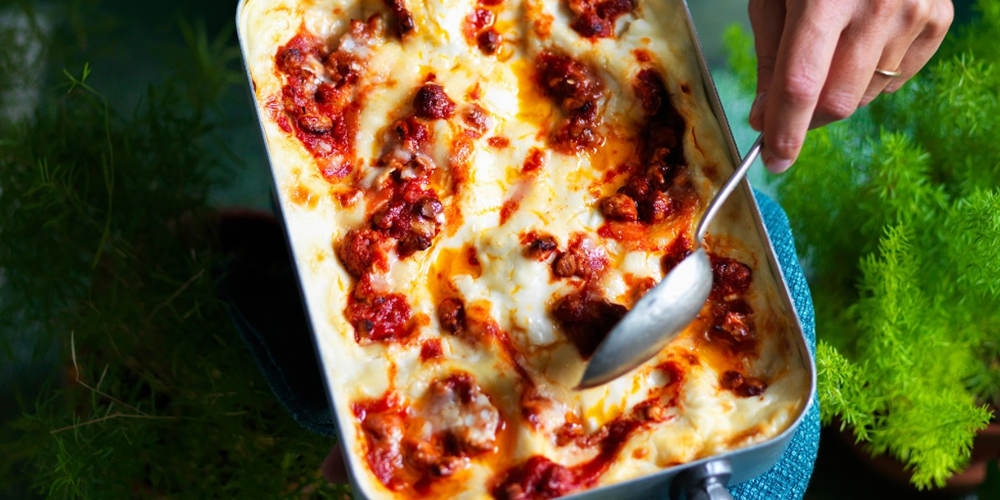

Lasagna

Description
Lasagna is the name of one of the oldest and best-known pasta shapes.
It is usually rectangular or ribbon shaped, thicker than tagliatelle,
made from a dough based on flour and eggs, with numerous local variants.
After being boiled, the rectangular lasagna noodles are drained and placed in layers with
a filling that varies based on different local traditions.
Ingredients
- 1 pound lean ground beef
- 4 cups tomato-basil pasta sauce
- 6 uncooked lasagna noodles
- 1 (15-ounce) container ricotta cheese
- 2 ½ cups (10 ounces) shredded mozzarella cheese
- ¼ cup hot water
Steps
- Cook beef in a large skillet over medium heat, stirring until it crumbles and is no longer pink; drain. Stir in pasta sauce.
- Spread one-third of meat sauce in a lightly greased 11- x 7-inch baking dish; layer with 3 noodles and half each of ricotta cheese and mozzarella cheese. (The ricotta cheese layers will be thin.) Repeat procedure; spread remaining one-third of meat sauce over mozzarella cheese. Slowly pour 1/4 cup hot water around inside edge of dish. Tightly cover baking dish with 2 layers of heavy-duty aluminum foil.
- Bake at 375° for 45 minutes; uncover and bake 10 more minutes. Let stand 10 minutes before serving.